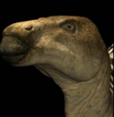

Hompejgji i Arbërit
Dhëmbët e Iguanadonit
DINOARBI
Iguanadon
Gideon Mantell, një mjek nga Lewesi në Sussex në anglin veriore, bënte për qdo vitë mbledhjen e fosileve në gur ranor të pyllit të Tilgatit, dhe ai pat zbuluar eshtra që i përkitnin tri specieve të zhdukura: një krokodilit gjigant, një plesiosaurit, dhe një Megalosaurit. Por në vitin 1822 ai gjeti disa dhëmbë të cilët qënë ''të mrekullueshëm'' të cilat kishin qenë të ardhur nga një lloj i veçantë i Saurianit.
Pas konsultimit të shumë eksperteve , Mantelli erdhi në përfundim se vrima e dhëmbit të çuditshem ishte e ngjashme me dhembin e iguanit i cili jeton edhe sot, me përjashtim se ata dhëmbë ishin 20 herë më të gjatë. Me këtë ai konkludonte se ai kishte gjetur dhëmbët e një zvarraniku gjigantë, të cilin ai e emëroi me emrin Iguanadon ''Iguana-tooth(dhëmbë)''. Ai spekuloi se mbas të dimensionit të dhëmbëve të gjetura në fosilet e kafshëve , atëherë Iguanadoni duhet të ketë qenë më i gjatë se 60 këmbë.
Prodhuar më;
1 janar 2003
Kontakto me mua në e-mailin tim:
kapreboys6@hotmail.com